The Web
Categorie
Full Stack Development
Profiel Basic Front End Web Developer
 Een Front End Web Developer richt zich op de presentatielaag, meestal het gedeelte wat gebruiker ziet en mee interacteert, van website of App, of stuk web functionaliteit. Hierbinnen bedient developer zich met tools die in staat stellen om alles te maken wat zich nu al manifesteert, of er nog niet is, en dus moet worden bedacht of gemaakt.
Een Front End Web Developer richt zich op de presentatielaag, meestal het gedeelte wat gebruiker ziet en mee interacteert, van website of App, of stuk web functionaliteit. Hierbinnen bedient developer zich met tools die in staat stellen om alles te maken wat zich nu al manifesteert, of er nog niet is, en dus moet worden bedacht of gemaakt.
Het woord Basic in dit profiel refereert aan de primaire benodigde kennis, kunde en vaardigheden. Basic refereert in dit geval zeker niet aan de complexiteit want het betreft diepgaande materiedeskundigheid alsmede een grote omvang daarvan.
→ zie: Wikipedia Front End Web Development
Werkveld
Bouw van statische websites, maken user interface layout, toevoegen dynamische functionaliteit zoals models en slideshow, lanseren (deploy) en beheren van websites. De Basic Front End Web Developer beheerst navolgende tools adequaat om taken te kunnen verrichten.
- Source Code Editor
-
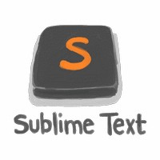 HTML, CSS, JS en later meer, alles moet worden ingetikt, of coding, met behulp van een editor. Een gewone tekst editor zoals Word of LibreOffice Writer is niet de bedoeling want deze programma's bewaren cq slaan op hidden allerlei besturing karakters voor opmaak van document. De editor moet dus voor coding geschikt zijn.
→ zie: Wikipedia Source Code EditorEen editor kan zijn NotePad, maar dat is weer net iets tè eenvoudig. Beter is een editor te gebruiken die speciaal is ontwikkeld voor coding want in zo'n editor zitten allerlei coding ondersteunende opties, oftewel plugins. Voor starten met coding is het aan te bevelen om "eenvoudig" te beginnen en later pas naar Integrated Development Environment (IDE) over te stappen, want IDE's zijn best wel complex en als gebruiker vanaf scratch een taal zoals HTML wil leren dan is het niet aan te bevelen om gelijktijdig óók een complexe IDE tool te leren beheersen. Probeer zelf welke editor het beste bevalt, meeste developers prefereren SublimeText.
→ zie: Wikipedia SublimeText
→ zie: Website SublimeText tbv downloadSublimeText kan "gratis" geinstalleerd worden maar is geen free open source software. Editor vraagt dan zo-af-en-toe om registreren. Om telemetrie van deze editor alsook de Atom editor te blokkeren, voeg dan onderstaande regels toe aan firewall rules: /etc/hosts
# block popups
127.0.0.1 www.sublimetext.com
127.0.0.1 www.atom.io - HTML
-
Is de standaard opmaaktaal voor het maken van webpagina's en webapplicaties. Samen met Cascading Style Sheets (CSS) en JavaScript (JS) vormt het drietal de hoeksteen technologieën voor het World Wide Web.
→ zie: Wikipedia HTML
→ zie: Website HTML conventiesDocumenten in HTML kunnen geopend en gelezen worden door een web browser om vervolgens als web pagina weergegeven te worden. HTML documenten bevatten op de eerste plaats semantische structuur en tekstuele inhoud van een web pagina; de opmaak en visuele weergave kunnen er ook in worden beschreven, maar daar wordt tegenwoordig gewoonlijk CSS voor gebruikt.
Enerzijds coding HTML, CSS, JS en anderzijds browser zijn een soort van éénheid waarbij code vanaf de back end (meestal) server wordt gestuurd naar de front end op apparaat van gebruiker browser, en het is de code die 'commandeert' de browser wat te doen. Daarvoor is kern onderdeel van browser een 'engine' die commando's kan interpreteren en uitvoeren. Meeste browsers zijn in de kern dan ook gelijk aan elkaar.
Aardig te melden dat momenteel het World Wide Web Consortium (W3C) werkt aan de browser engine voor uitbreiding naar WebAssembly (WASM) met contributies van Mozilla, Microsoft, Google, en Apple. WASM is in plaats van code interpreteren en dan pas uitvoeren zoals nu het geval, direct executables aansturen, voor mogelijk maken van high performance web sites.
→ zie: YouTube Videotorial HTML
- Cascading Style Sheet (CSS)
-
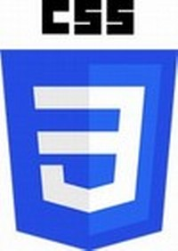 Cascading Style Sheets (CSS), stijlbladen, zijn een mogelijkheid om de vormgeving van webpagina's los te koppelen van hun feitelijke inhoud en centraal vast te leggen.
→ zie: Wikipedia CSS
→ zie: Website CSS conventiesMet CSS kan de vormgeving van elk element in een webpagina worden bepaald. Een element van een webpagina wordt gedefinieerd door het gebruik van een HTML-tag. Een stijl bestaat uit een aantal aspecten zoals lettertype en voor- en achtergrondkleur.
Ook breedte van kantlijnen, de horizontale en verticale positie, de zichtbaarheid, de transparantie, of een element boven of onder een ander element ligt en vele andere aspecten kunnen in een stylesheet worden aangegeven.
→ zie: YouTube Videotorial CSS
- JavaScript (JS)
-
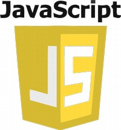 JavaScipt (JS) is een veelgebruikte scripttaal om webpagina's interactief te maken en webapplicaties te ontwikkelen. Het script wordt door middel van HTML en CSS overgebracht in de webbrowser en wordt hierin uitgevoerd.
→ zie: Wikipedia JavaScript
→ zie: Website JavaScript conventiesDe syntaxis van JavaScript vertoont overeenkomsten met de programmeertaal Java, maar dit is voornamelijk het gevolg van de gemeenschappelijke afkomst van de programmeertaal C. Omdat beide talen het meest zichtbaar zijn op en rond de browser, maar vooral door de naamgeving, worden ze vaak met elkaar verward.
De gelijkenis houdt daar echter op, want JavaScript heeft inhoudelijk meer gemeen met functionele programmeertalen, het biedt prototype gebaseerde overerving en niet, zoals Java en de meeste objectgeoriënteerde talen, klasse gebaseerde overerving. Geleerd wordt coding basisprincipes, gegevenstypen, functies, conditionals, lussen, operators. DOM (knoppen) manipulaties en gebeurtenissen.
- Browser Developer tool
-
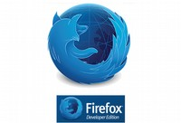 Tijdens het ontwikkelen van een plain vanilla HTML website kan coding resultaat worden bekeken door het werk te openen in "gewone" browser. Als er iets niet goed gaat dan is dat snel te zien en dito in code te achterhalen en verbeteren.
Naarmate complexiteit toeneemt met bijvoorbeeld JavaScript, met opslaan van gegevens (JSON) in bestanden en back end databases, met meer functionaliteit dan wordt coding al snel zó complex dat niks in een keer goed gaat en alles een stuk uitdagender wordt.
Nodig is geduld, doorzettingsvermogen en een developer browser tool om te onderzoeken, to inspect, en oplossingen door te voeren.
→ zie: Mozilla Developer tools Document
→ zie: Mozilla Firefox Browser Developer edition - JavaScript Object Notation (JSON)
-
JavaScript Object Notation (JSON) is een gestandaardiseerd gegevensformaat en wordt hoofdzakelijk gebruikt voor uitwisseling van data tussen front end App en back end server als een alternatief voor XML.
→ zie: Wikipedia JSON
→ zie: Website JSON conventiesJSON is oorspronkelijk ontstaan uit de programmeertaal JavaScript, maar is inmiddels een taalonafhankelijk dataformaat. Code voor het lezen en maken van JSON data is beschikbaar in een grote diversiteit van programmeertalen.
Het onderstaande voorbeeld is de JSON-weergave van een lijst met twee elementen:
[ {
"Naam": "JSON",
"Type": "Gegevensuitwisselingsformaat",
"isProgrammeertaal": false,
"Zie ook": [ "XML", "ASN.1" ]
},
{
"Naam": "JavaScript",
"Type": "Programmeertaal",
"isProgrammeertaal": true,
"Jaar": 1995
}
]
→ zie: YouTube Videotorial JSON
- Responsive Web Design
-
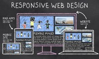 Responsive webdesign is een benadering van webdesign waarbij de web developer streeft naar een optimale webervaring voor een breed scala aan apparaten (van desktop computerschermen tot mobiele telefoons). Het ontwerp van een responsive website schaalt mee met de afmetingen van een scherm, zonder in te leveren op leesbaarheid van tekst of bruikbaarheid van de gebruikersinterface.
→ zie: Wikipedia Responsive web designDe term responsive webdesign is omdat steeds meer bedrijven investeren in een mobiele website om hun klanten ook mobiel een optimale ervaring te bieden. Maar door het groeiende aantal apparaten, met allen hun eigen resolutie en afmetingen, bleek één mobiele website geen optimale oplossing. In plaats van te ontwerpen in vaste afmetingen, een benadering die stamt uit het printtijdperk, is het veel praktischer was om te ontwerpen in percentages en andere relatieve eenheden.
De flexibele grids zorgen ervoor dat breedtes en hoogtes van elementen niet in pixels worden bepaald, maar in relatieve eenheden als percentages en em's. Elementen in een flexibele grid schalen altijd naar een percentage van het element waarin ze zich bevinden, of de afmetingen van het zichtbare gedeelte van de browser. Flexibele afbeeldingen worden ook relatief geschaald, zodat ze nooit buiten hun proporties worden weergegeven.
In onderstaande twee tutorials oa: HTML, CSS3, Bootstrap en FlexboxGrid:
→ zie: YouTube Videotorial Responsive web 1
→ zie: YouTube Videotorial Responsive web 2 - Bash & Shell Scripting
-
Bash wordt op grote schaal gebruikt als de standaard login shell voor de meeste Linux distributies en macOS (iTerm2) en eerdere versies van Apple. Een versie is ook beschikbaar voor Windows 10 (Git Bash)
→ zie: Wikipedia Unix Shell & command language
→ zie: Website GNU BashBash is een opdrachtprocessor die meestal wordt uitgevoerd in een tekstvenster waarin de gebruiker opdrachten typt die acties veroorzaken. Bash kan ook opdrachten lezen en uitvoeren vanuit een bestand, een shellscript genoemd. Net als alle Unix shells ondersteunt het bestandsnaam globbing (wildcard matching), piping, input van/naar documenten, opdrachtvervanging, variabelen en besturingsstructuren voor conditietesten en iteratie. Voorbeelden:
# cd /home/andy # root gaat naar home directory van gebruiker andy
$ echo "Hello World" # gebruiker print Hello World
$ type readme.txt # gebruiker bekijkt inhoud van file readme.txtMet shell scripting kunnen commands in console of in file opgeslagen worden om uitgevoerd te worden. Voorbeeld:
$ start=1; end=10
$ eval echo {$start..$end}
1 2 3 4 5 6 7 8 9 10→ zie: YouTube Videotorial Linux Basic Commandline
→ zie: YouTube Videotorial Linux Shell Scripting - Git
-
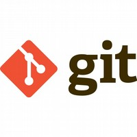 Git is een versie beheer systeem. Bij gebruik van Git bevat elke folder cq werkmap de volledige repository met een compleet historisch overzicht en volledige trackingcapaciteiten van alle wijzigingen, toevoegingen en vervallingen. Git functioneert op eigen computer (localhost).
→ zie: Wikipedia Git
→ zie: Website Git tbv download Linux macOS
→ zie: Website Git tbv download WindowsVersiebeheer, alleen of in teamverband, is belangrijk component van dagelijks werk. Git stelt gebruiker in staat om eigen wijzigingen volledig te documenteren. Bij gebruik van Git in folder op localhost kan door middel van push de hele wijzigingssessie worden geupload naar server van GitHub in project repository. Met pull kunnen de wijzigingen (van andere teamleden) vanaf server GitHub repo naar folder op localhost worden gedownload.
Git en Github (zie hierna) zijn twee verschillende tools maar dusdanig aan elkaar gekoppeld dat min of meer van één tool sprake is. Meeste tutorials behandelen dan ook de twee als één.
- GitHub
-
Github is een website waarop software kan geplaatst worden en gebouwd rond het Git versie beheer systeem, waardoor GitHub alle mogelijkheden van Git en eigen toevoegingen aanbiedt.
→ zie: Wikipedia GitHub
→ zie: Website GitHub aanmelden en startenGitHub beschikt onder ander over toegangscontrole en verschillende samenwerking functies, zoals een issue tracker, een forum voor het aanvragen van functies, takenlijsten en wiki's voor ieder project. Op GitHub staat veel open source software omdat bij openbare repositories de broncode kan worden ingekeken door derden.
Github versiebeheer opereert in de cloud en kent “privé” account en “openbare” account, met dus die onderscheidende exposure.
- GitHub Pages
-
Gebruiker met account op GitHub kan gratis een front end website op Pages server laten draaien Deze voorziening heet GitHub Pages.
→ zie: GitHub Pages info en starten
Alhoewel GitHub Pages dus een onderdeel is van GitHub kan gebruiker zonder verder Git functionaliteit te gebruiken, wel eenvoudig een statische website publiceren want deployen (uploaden) van website naar server kan prima mbv old skool aanwijzen en uploaden van bestanden.
GitHub Pages voorziet niet in dynamische gebruikersinteractie zoals bij webshop. GitHub Pages faciliteert alleen statische website; dat is HTML, CSS en Javascript code, dus geen PHP, MySQL etc.
Stappenplan voor publicatie website op GitHub Pages:
→ vastleggen kopen domeinnaam
→ Maken logo met app bij NameCheap tbv opmaak website
→ Maken account bij GitHub met profiel setup wo logo
→ Maken in master branche nieuwe repository (public is gratis) en uploaden website
→ Instellen van repo settings met enable Enforce HTTPS
→ Maken DNS A-records voor verwijzen naar 4x HTTPS GitHub Pages servers
1. 185.199.108.153
2. 185.199.109.153
3. 185.199.110.153
4. 185.199.111.153
→ Maken CNAME-record voor verwijzen van www domeinnaam naar GitHub Pages
- FileZilla file transfer
-
FileZilla is een open source file transfer programma voor Windows, macOS, Linux en FreeBSD. Met FileZilla is het mogelijk over meerdere verbindingen bestanden naar een FTP-server te sturen en op te halen, waardoor men sneller bestanden kan uploaden en/of downloaden.
→ zie: Wikipedia FileZilla
→ zie: Website FileZilla tbv downloadFileZilla biedt de mogelijkheid tot een veilige verbinding, zo is er ondersteuning voor FTP over SSH en FTP over SSL/TLS. Ook kan er met wachtrijen en proxyservers gewerkt worden. Er is een ook een mogelijkheid om de upload en download snelheden te begrenzen.
- Cloud Services
-
Ingeval van web presents met gebruikmaken van CMS, website of App development kan dat naast eerder bij OTAP genoemde mogelijkheden van bijvoorbeeld "bare metal op eigen hardware", of via eigen hardware met Virtualbox etc. Echter mondiaal gezien is huren in de cloud de trend. Er zijn enkele grote leveranciers met uitgebreidt service aanbod.
In onderstaande tabel staan vier grote leveranciers die gelijksoortige producten aanbieden, zie daarvoor de horizontale rij voor de naam van elk product per supplier.
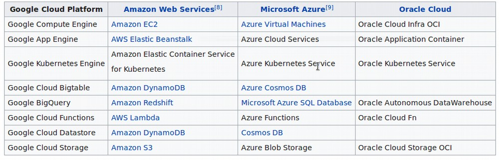Voor uitwerken van Cloud Services is als voorbeeld gekozen Google Cloud Platform. Er zijn zeer veel mogelijkheden waarvan enkele onderstaand genoemd. En in de naam van elke product wordt verwezen naar naar een Cloud Service als boven in tabel vermeld. Dus voor andere leverancier dan Google kijk dan in tabel voor equivalent bij gewenste supplier.
Compute
- App Engine Platform as a Service to deploy Java, PHP, Node.js, Python, C#, .Net, Ruby and Go applications
- Compute Engine Infrastructure as a Service to run Microsoft Windows and Linux virtual machines
- Kubernetes Engine Containers as a Service based on Kubernetes
- Cloud Functions Functions as a Service to run event-driven code written in Node.js or PythonStorage & Databases
- Cloud Storage Object storage with integrated edge caching to store unstructured data
- Cloud SQL Database as a Service based on MySQL and PostgreSQL
- Cloud BigTable Managed NoSQL database servicev - Cloud Spanner Horizontally scalable, strongly consistent, relational database service
- Cloud Datastore NoSQL database for web and mobile applications
- Persistent Disk Block storage for Compute Engine virtual machines
- Cloud MemoryStore Managed in-memory data store based on RedisNaast hierboven beschreven mogelijkheden is er ook nog op hoofdlijnen: Networking, Big Data, Cloud AI, Management Tools, Identity & Security, IoT, API Platform met elk weer een reeks producten in vervat.
- Website Hosting in de Cloud
-
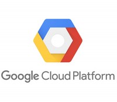 Een website hosten in de cloud kan als Shared Hosting of Virtual Private Hosting. Het verschil is de eerste is goedkoper maar gedeelde plek op een server met andere gebruikers en dus eventueel performance issues of tweede optie VPS is duurder met dedicated "eigen" gehuurde server zonder andere gebruikers.
In tutorial wordt uitgegaan van shared hosting via Google Cloud Platform bij product Compute Engine. Hiervoor nodig:
- nodig gmail account
- nodig creditcard tbv registratie (kostenvrij)
- nodig domeinnaam
- voorbeeld is LAMP stack installatie (Linux, Apache2, MySql, PHP)
- voorbeeld is CMS WordPress - Website Traffic Statistieken
-
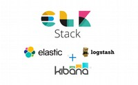 Elastic is geschikt voor analyse van Big Data, dus ook geschikt voor analyse van webserver access logfiles van Apache2 en NginX. Elastic wordt ook gebruikt bij containerization zoals OpenShift. Vanaf webserver access logfile voert deamon Logstash actuele data vanuit /var/log/apache2/access.log naar viewer Kibana.
→ zie: Website Elastic get startedZoals bij Profiel Web Manager onder kopje privacy beschreven is het maatschappelijk niet gewenst dat van iedereen al het internetgebruik wordt vastgelegd en wordt gekoppeld aan het sociale media account, of indien geen account dan in schaduwprofiel. Het voorstel is dan ook geen track en trace scripts in website te bouwen.
Elastic biedt uitstekende mogelijkheid om zonder inzet van scripts van derden, toch website traffic te analyseren via onderdelen Elasticsearch, Beats, Logstash en Kibana.
- Design en MockUp
-
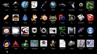 Front End Developer werkt nauw samen met Content Creator en zal vaak gelijke tools gebruiken om aangeleverd werk indien nodig te bewerken. Of er is niet speciaal een Content Creator en dan maakt developer een ontwerp of mockup. Vandaar benodigd kennis van Multimedia tooling.
→ zie: Profiel Content CreatorNaast genoemde Multimedia tools:
→ zie: Figma Design, prototype, en collaborate webApp
→ zie: Sketch Vector graphics editor NL-product alleen macOS App - VS Codium IDE
-
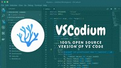 Naarmate developer bedreven is in coding ontstaat ook de behoefte om de source code editor zoals hiervoor gebruikt "SublimeText" te vervangen met een Integrated Development Environment (IDE) die veel meer coding ondersteunende functionaliteiten bevat en is uit te breiden met plugins. Mondiaal gezien kiezen developer meestal Visual Studio Code als IDE.
Echter, de App VS Code is ontwikkeld door Microsoft en net zoals in hun OS Windows heeft bedrijf ook in hun IDE VS Code een trits telemetrie geintroduceerd. En deze website betoogt juist vanwege privacy en security om free open source software (FOSS) te gebruiken en geen closed source OS of Apps te gebruiken met telemetrie erin. Dus wat te doen, want VS Code is met goede reden populair?
Nu zijn er handleidingen om in VS Code de telemetrie uit te zetten, en dat is een heel gedoe, plus na elke update gebruiker checken of Microsoft toch weer niet iets heeft aangezet, zoals bedrijf dat doet bij Windows OS tijdens updates.
VS Codium is een alternatieve distributie van de software die alleen de open source delen gebruikt en de handelsmerken van Microsoft en de telemetrie component weglaat, terwijl het volledig functioneel en compatibel blijft in alle andere opzichten. Het advies is om VS Codium te installeren en gebruiken.
→ zie: Website VS Codium tbv downloadInstalleer VS Codium vanaf website via boven achter button. Gebruik voor Linux de optie Debian / Ubuntu (deb package):
- Add the GPG key of the repository
- Add the repository
- Update then install vscodium
Voor alle zekerheid controle op telemetrie binnen VS Codium:
- Ga naar File, Preferences, Settings
- Zoek op "telemetry" en disable
- Zoek op "crash" en disableNamen:
MS Visual Studio is ander product dan MS Visual Studio Code, dus niet te verwarren.
MS Visual Studio is ander product dan Visual Studio voor macOS, dus niet verwarren.
MS Visual Studio Code heeft een non telemetrie versie VS Codium.
Deze guide en ook turorials gaan met de naam VS Code.
Waar hierna VS Code staat of wordt genoemd, dat staat gelijk aan VS Codium. - Node.js
-
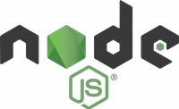 Node.js is free open source software platform waarop men applicaties kan ontwikkelen en draaien. Code geschreven in JavaScript kon initieel alleen via een web browser worden uitgevoerd. Met Node.js kan JavaScript code zonder web browser draaien, bijvoorbeeld in de back end op server om de front end hardware performance te ontlasten.
→ zie: Wikipedia Node.js
→ zie: Wesbite Node.js tbv download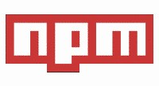 Binnen Node.js zit ook de "npm" pakket manager, een soort van App Store, waarmee ontwikkeltijd besparende software en libraries kunnen worden gedownload. Veel is gratis en er is ook betaalde download. Wat veel developers dan ook doen is Node.js samen met VS Code installeren en binnen VS Code de npm aanroepen voor allerlei functionaliteiten.
→ zie: Wikipedia npm
→ zie: Website npm tbv aanmeldenDOEN
Ter preventie van activeren virussen op localhost is het 1e npm commando:
$ npm config set ignore-scripts trueOmdat binnen Node.js met JavaScript, Apps ontwikkeld kunnen worden, maakt Node.js het dus voor een Front End Web Developer mogelijk om back end software te ontwikkelen zonder kennis van specifieke back end talen zoals bijvoorbeeld PHP. In het kader van JavaScript everywere is Node.js omgeving begonnen met developen in taal JavaScript; maar het is nu ook mogelijk om andere front end talen te gebruiken zoals CoffeeScript, Dart, TypeScript, ClojureScript.
→ zie: YouTube Videotorial Node.js
- Stylesheet Sass
-
Sass is een preprocessor scripttaal die wordt geïnterpreteerd of gecompileerd naar Cascading Style Sheets (CSS). SassScript is de scripttaal zelf. De nieuwere syntaxis "SCSS" (Sassy CSS) maakt gebruik van blokopmaak zoals die van CSS. Het gebruikt accolades om codeblokken en puntkomma's aan te geven om lijnen binnen een blok te scheiden. De ingesprongen syntaxis en SCSS-bestanden krijgen traditioneel de extensies .sass en .scss.
→ zie: Wikipedia Sass Stylesheet
→ zie: Website Sass tbv downloadCSS bestaat uit een reeks selectors en pseudo selectors die regels groeperen die daarop van toepassing zijn. Sass breidt CSS uit door verschillende mechanismen beschikbaar te stellen in meer traditionele programmeertalen, met name objectgeoriënteerde talen, maar die niet beschikbaar zijn voor CSS zelf.
Wanneer SassScript wordt geïnterpreteerd, maakt het blokken CSS regels voor verschillende selectors zoals gedefinieerd door het Sass bestand. De Sass tolk vertaalt SassScript in CSS. Als alternatief kan Sass het .sass of .scss bestand bewaken en vertalen naar een output .css bestand wanneer het .sass of .scss bestand wordt opgeslagen.
→ zie: YouTube Videotorial Sass
- Gulp
-
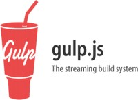 Gulp is een free open source JavaScript toolkit gebruikt als een streaming build systeem bij front end web development. Het is een taakagent gebouwd op Node.js en npm, gebruikt voor het automatiseren van tijdrovende en repetitieve taken betrokken bij web development zoals minificatie, aaneenschakeling, cache busting, unit testen, source code error detectie, optimalisatie.
→ zie: Wikipedia Gulp.js
→ zie: Website Gulp getting startedEnkele van de meest voorkomende taken zijn:
- Reeks afbeelding bestanden comprimeren
- Debugger en console instructies uit scripts elimineren
- CSS en JavaScript minimaliseren, samenvoegen en opschonen
- Analyseren source code op fouten
- LESS bestanden compileren
- Unit test uitvoeren
- Updates verzenden naar een productieserver
- Updaten van databasesBijvoorbeeld een reeks afbeeldingen in een folder comprimeren:
gulp.task('jpgs', function() {
return gulp.src('src/images/*.jpg')
.pipe(imagemin({ progressive: true }))
.pipe(gulp.dest('optimized_images'));
});
Afronding profiel
Tot zover het overzicht van tools zoals gebruikt door Basic Front End Web Developer. Zoals bovenaan deze pagina gesteld heeft woord "basic" niks te maken met eenvoud of mate van complexiteit, doch in dit geval beschijft het beheersing van essentieel benodigde tooling voor Front End Web Developer.